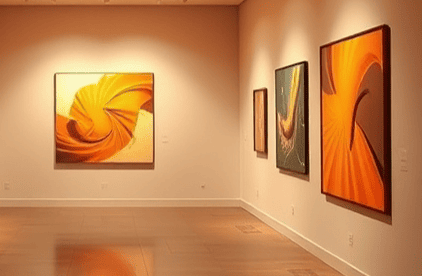

Notre galerie
Créée en 2015 par Paul Dechewsky, notre galerie d’art située à Paris, reflète la passion artistique, représentée autour d'œuvres graphiques.
La galerie effectue des rotations des collections pour rendre accessible aux plus grands nombres, une diversité artistique.
Nous proposons des expositions, vernissages, et autres lieux de rencontres, autour d'œuvres à acquérir ou rencontrer.
L'artiste mise à l'honneur
Jusqu’au 31 décembre 2024, Hiba est mise à l’honneur, artiste digitale marocaine qui habite à Dijon. Son travail est toujours inspiré par des enjeux de société actuels comme le féminisme, discrimination et l’environnement.
Elle s’informe de la réalité actuelle en France, au Maroc et autour du monde entier pour la création de ses œuvres. Elle est actuellement en Master 2, et publie ses travaux sur Instagram et Behance autour de deux expositions.
hiba_squirrelart
Bachiri Hiba